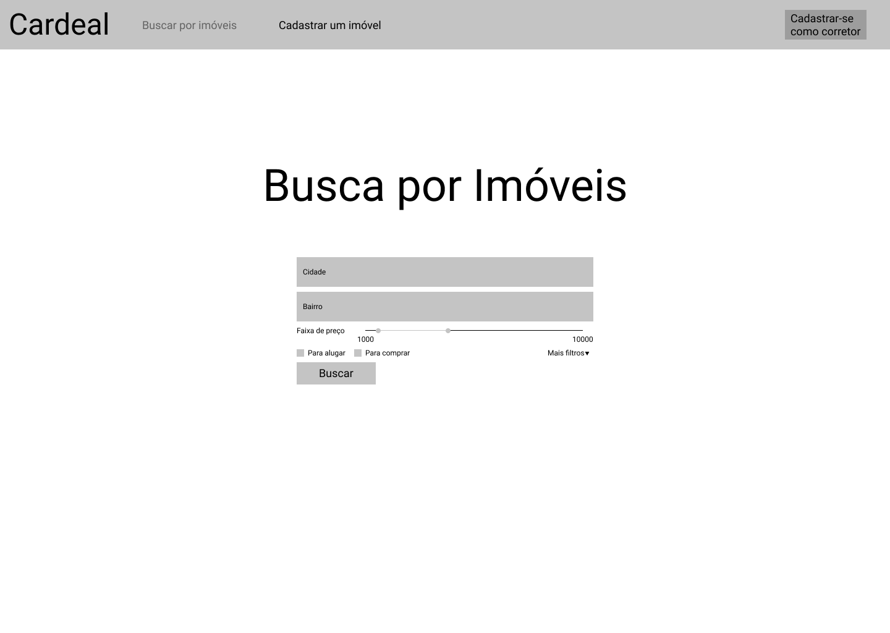
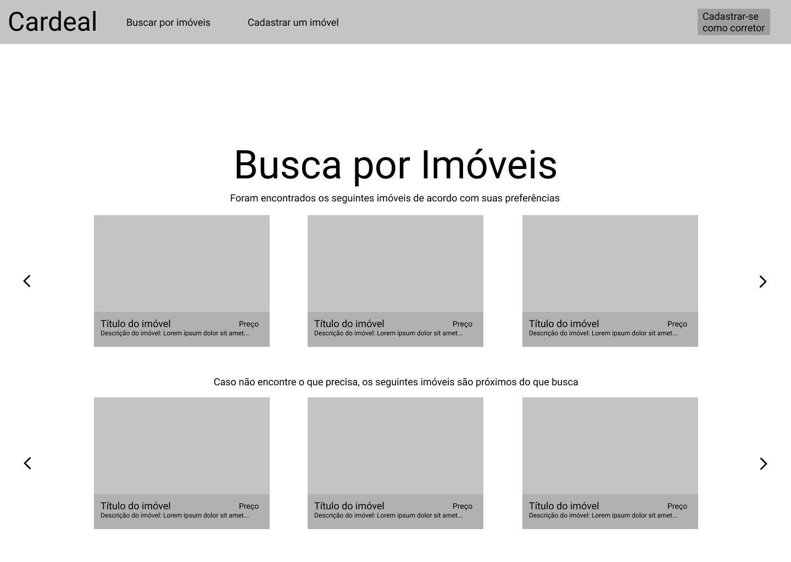
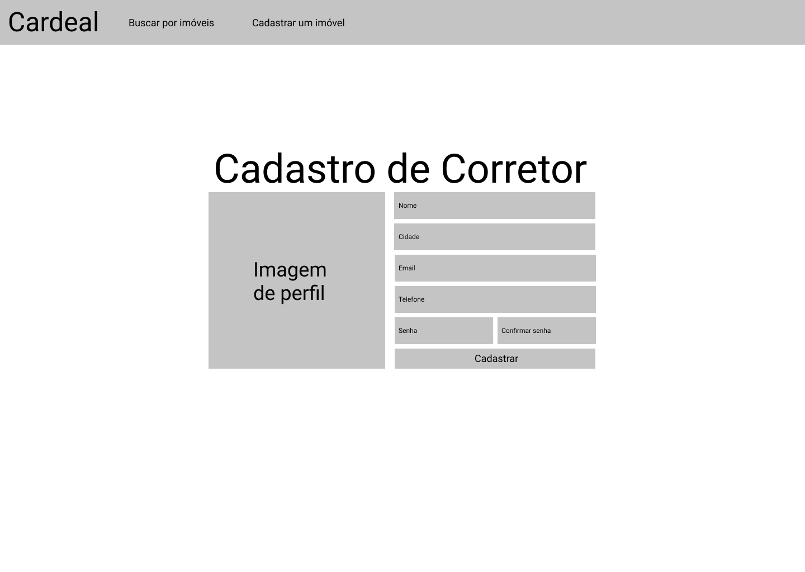
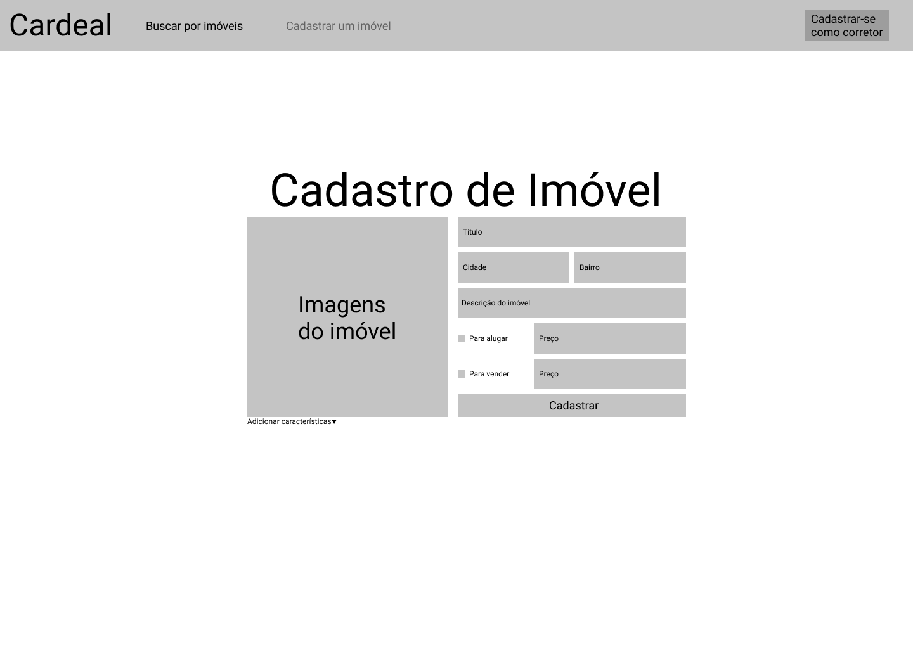
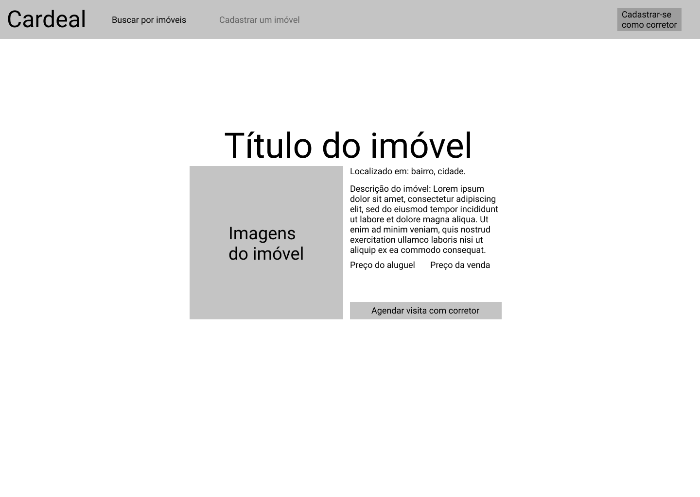

Protótipo
1. Objetivo
O objetivo de um protótipo é analisar e testar uma solução de design para um produto antes de sua implementação. A partir de um protótipo, é possível assegurar que o design pretendido funciona como deveria e que os usuários conseguem utilizar o produto.
2. Resultados
2.1 Protótipo de baixa fidelidade
Foi feito um protótipo de baixa fidelidade para representar a interface do projeto. As seguintes telas foram contempladas:
-
Busca por imóveis
-
Lista de imóveis buscados
-
Cadastro de corretor
-
Cadastro de imóvel
-
Visualização de um imóvel selecionado
Essas telas possibilitam a execução das seguintes ações:
-
Procurar imóveis
-
Cadastrar imóveis
-
Agendar visita com corretor
-
Cadastrar-se como corretor
-
Remover imóvel (caso seja um corretor)
-
Atualizar imóvel (caso seja um corretor)
Busca por imóveis

Lista de imóveis buscados

Cadastro de corretor

Cadastro de imóvel

Visualização de um imóvel selecionado

3. Versionamento
| Data | Versão | Descrição | Autor |
|---|---|---|---|
| 02/08/2021 | 1.0 | Criação do Documento | Pedro Haick |
| 04/08/2021 | 1.1 | Padronização do documento | Bruno Nunes e Marcos Rodrigues |